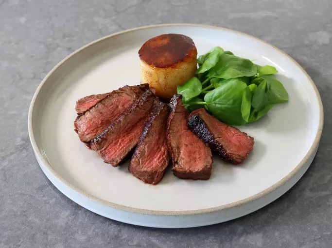

Japanese-Style Triple-Seared Steak Recipe
This Japanese-style triple-seared steak technique may sound like 2 sears too many, but it is not. It is an absolute game-changer that produces an incredibly delicious steak with a beautiful crust.
Over the years I’ve developed a pretty decent chef-radar for identifying what new recipes and techniques are gimmicks or fleeting fads, and which are actual culinary breakthroughs, and when I first heard about Japanese-style triple-seared steak, I thought for sure it was the latter. I’ve never been so happy to be wrong.
This technique may sound like two sears too many, but it’s definitely not. The salt, then whiskey, then soy searing method is an absolute game-changer that produces an incredibly flavorful steak with a thick, beautiful crust. This is a must make for any steak lover, and would be perfect for treating Dad on Father’s Day. But, no matter the occasion, I loved everything about this, and really do hope you give it a try soon. Enjoy!

Ingredients List
- 1 (8 ounce) center-cut filet mignon, fully trimmed
- 1 teaspoon avocado oil or other high heat oil
- 3 tablespoons coarse sea salt, or as needed
- 1/3 cup Japanese whiskey, or other bourbon or rye whiskey
- 1/4 cup soy sauce
- 1 tablespoon melted butter
Steps
- Before starting the triple-searing process, build a very hot hardwood charcoal fire. Oak, mesquite or hickory are great choices. The coals should be glowing red, and radiating extreme heat before the meat hits the grill.
- Rub steak all over with oil. Coat with sea salt until entire surface area is completely covered.
- Pour whiskey into a shallow bowl; set aside.
- Place steak on hottest spot on the grill, and sear both sides, about 2 1/2 minutes per side.
- Transfer steak into bowl of whiskey, and turn constantly for at least 1 minute. Most of the salt will rinse off.
- Place steak back onto the hottest spot on the grill, and sear both sides again, about 2 1/2 minutes per side. You can baste steak with a small amount of whiskey while searing.
- Add soy sauce to another shallow bowl. Add steak to the bowl, and turn constantly for at least 1 minute.
- Return steak to the hottest spot on the grill for the 3rd and final sear. Grill both sides for about 2 1/2 minutes, or until desired doneness is reached. For a rosy-pink inside, remove when an instant-read thermometer inserted near the center reads 118 to 120 F (48 to 50 degrees C).
- Brush steak with melted butter, and let rest for 3 to 4 minutes. Slice and serve with any accumulated juices from the plate.
Home